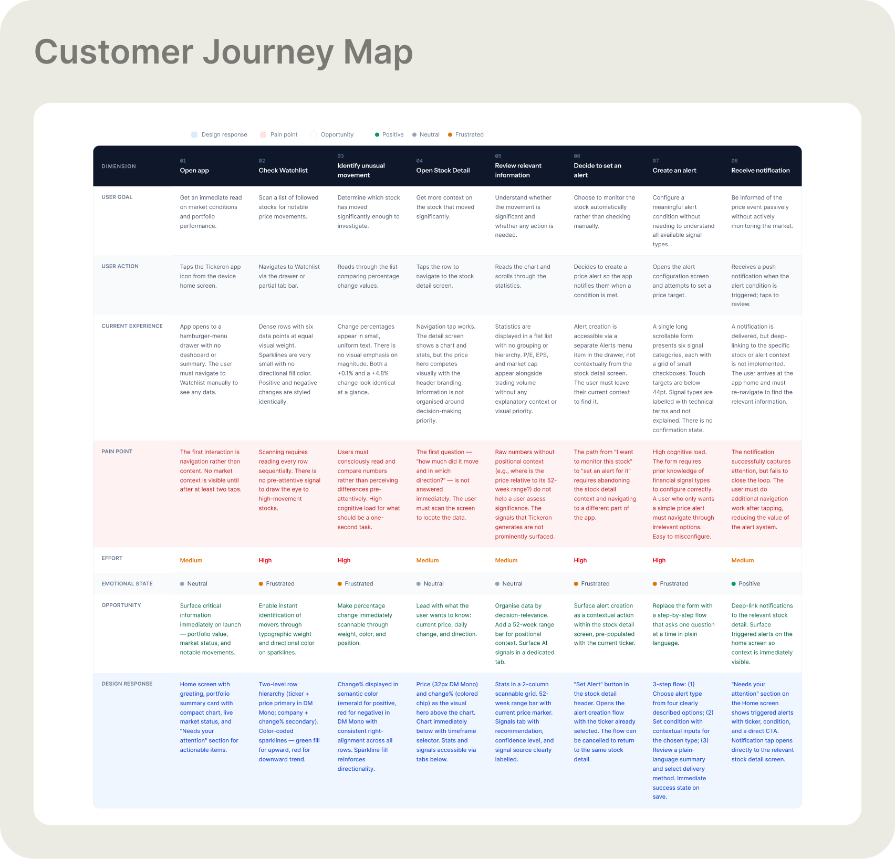
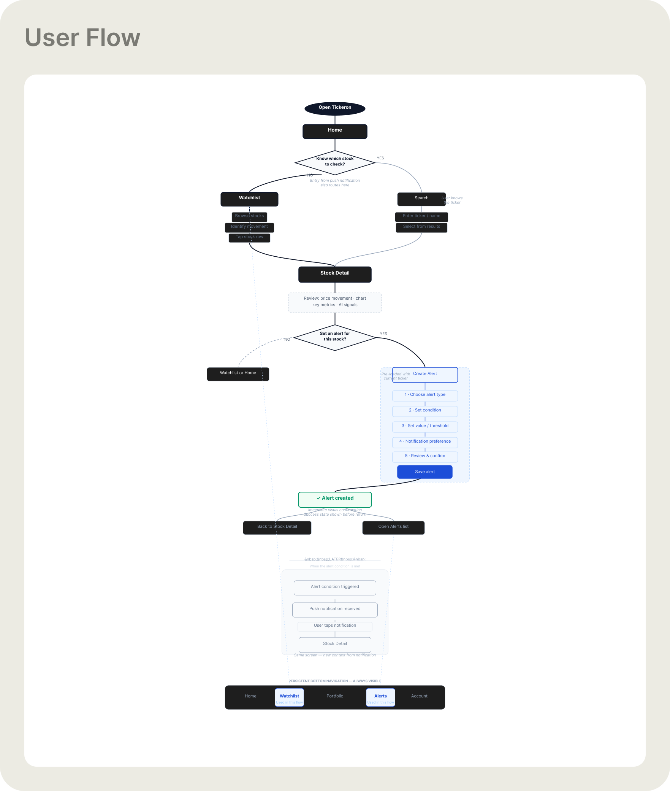
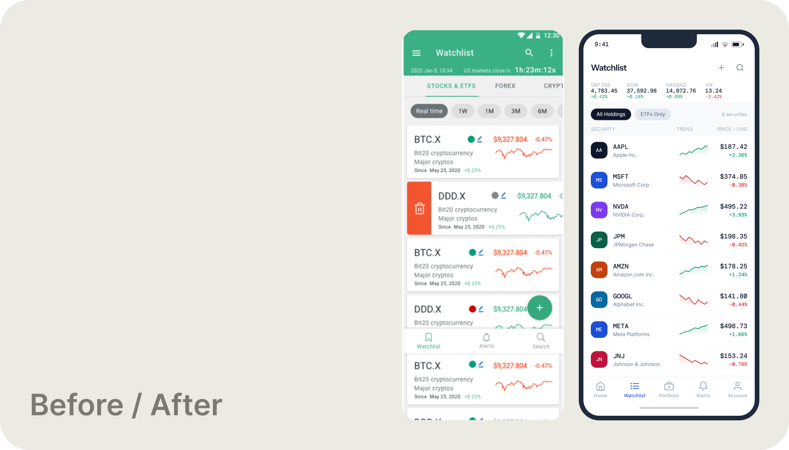
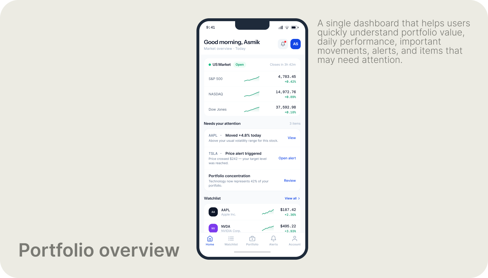
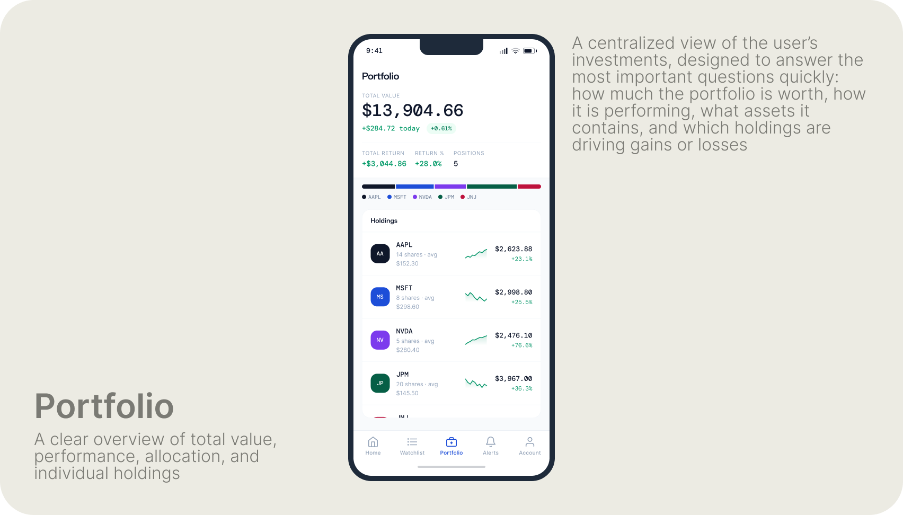
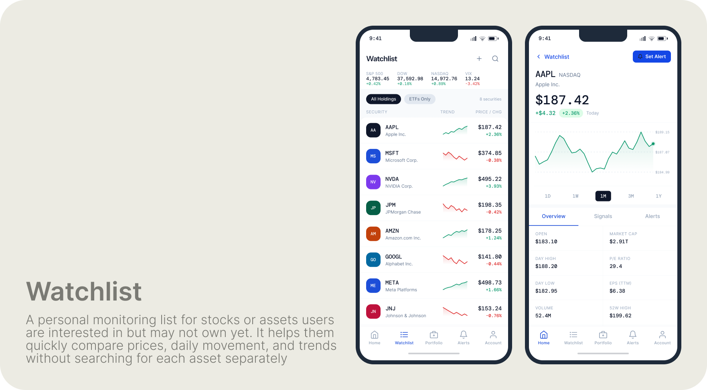
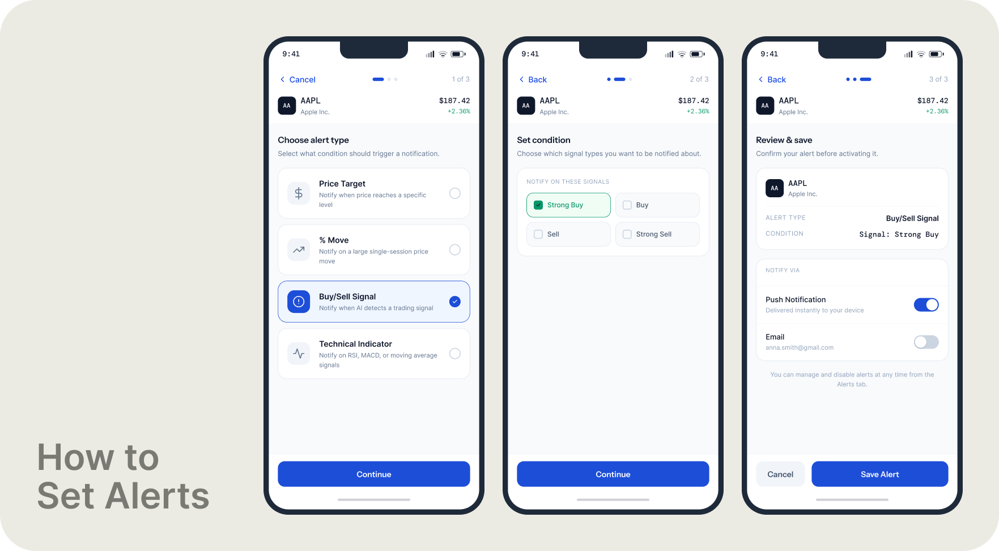
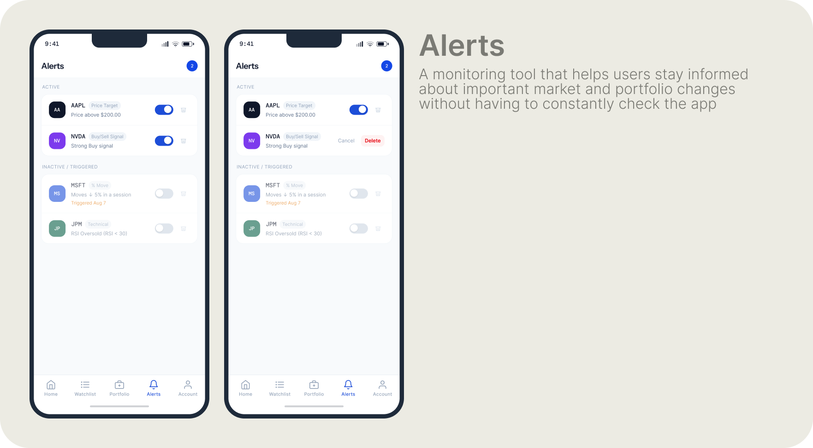
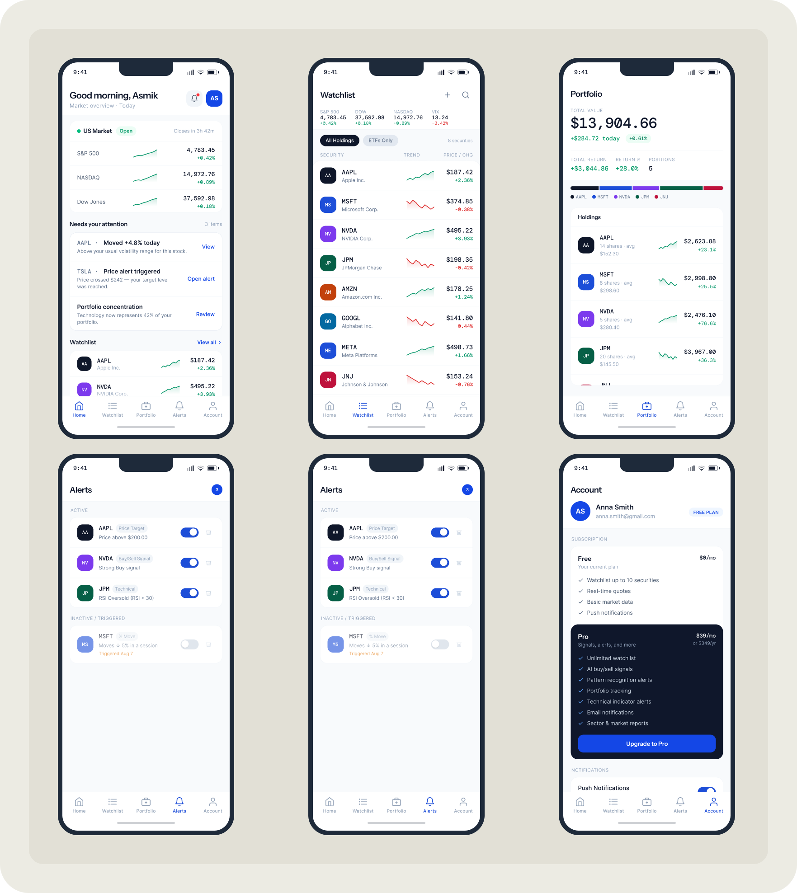

Role and overall result
Product Designer · 3 years across 6 product teams. Owned design end-to-end — from discovery and journey mapping to component system and handoff.
×2
subscriptions vs average promo campaign
+12%
annual company revenue
8→4
checkout steps
−20%
mobile drop-off
+32%
alert setup rate
Shipped results — Tickeron.com, 2021–2024
Tools and methodologies
Figma — all screen design and component system. Customer journey mapping of the core monitoring and alert-creation flow. Competitive benchmarking against Robinhood, TradingView, and Revolut Investing. Mobile-first layout, progressive disclosure.

Customer journey map — core monitoring and alert-creation workflow ↗ click to enlarge
- Competing navigation models — side drawer alongside other patterns — made it impossible to build a consistent mental map of the app
- Watchlist rows showed too much data at the same visual weight: price, volume, % change, mini-charts all competing equally
- Alert setup exposed every configuration option at once — users either misconfigured or abandoned the form entirely
- Crypto-dominant visual direction created distrust among users expecting a professional investment tool
- No design system meant visual drift across 6 teams — inconsistent buttons, states, and typography throughout the product

User flow — Watchlist → Stock Detail → Alert creation → Notification → Return to Stock Detail

Watchlist — before (left) and after (right). Old: crypto-dominant layout, inconsistent rows, competing navigation patterns. Redesign: clean hierarchy, consistent ticker rows, persistent bottom tab bar.
What changed and why
Navigation consolidated to a single persistent bottom tab bar — one model, one mental map. Financial data rows restructured around a clear priority hierarchy: ticker and name, then price, then daily movement with a mini-trend chart. Alert configuration redesigned into a 3-step progressive flow: choose type → set condition → review and save. A unified component system established consistent buttons, status states, typography, and semantic color (green for positive, red for negative) across all screens.
Key redesign areas

Home — portfolio value, market status, items needing attention, and Watchlist preview consolidated in a single view

Portfolio — total value, daily performance, allocation bar, and individual holdings in one scannable screen

Watchlist and Stock Detail — clean ticker rows with price and mini-chart; asset detail with price history and key metrics
The original alert setup exposed all configuration options simultaneously in a dense checkbox form. The redesign breaks this into three focused steps — each handles a single decision, making it significantly harder to misconfigure an alert.

Alert creation — 3-step progressive disclosure flow: choose alert type → set condition → review and save

Alerts — active conditions and triggered states, clear status separation, toggle-based management
Complete screen set

Home, Watchlist, Portfolio, Alerts, Account — full mobile screen set
← Portfolio